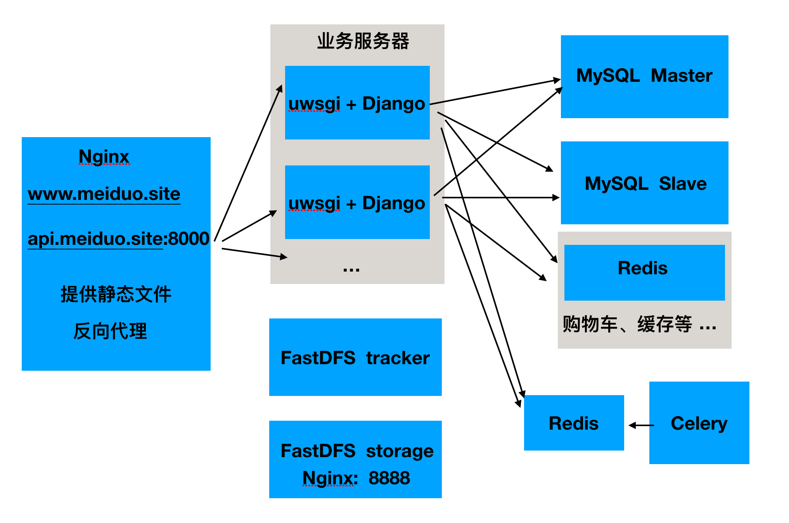

部署

1. 静态文件
当Django运行在生产模式时，将不再提供静态文件的支持，需要将静态文件交给静态文件服务器。
我们先收集所有静态文件。项目中的静态文件除了我们使用的front中之外，django本身还有自己的静态文件，如果rest_framework、xadmin、admin、ckeditor等。我们需要收集这些静态文件，集中一起放到静态文件服务器中。
我们要将收集的静态文件放到front目录下的static目录中，所以先创建目录static。
Django提供了收集静态文件的方法。先在配置文件中配置收集之后存放的目录
#收集静态文件目录
STATIC_ROOT = os.path.join(os.path.dirname(BASE_DIR), 'front/static')
然后执行收集命令
python manage.py collectstatic
我们使用Nginx服务器作为静态文件服务器
打开Nginx的配置文件
sudo vim /usr/local/nginx/conf/nginx.conf
注意
sudo apt-get install nginx 安装好的文件位置： /usr/sbin/nginx：主程序 /etc/nginx：存放配置文件 /usr/share/nginx：存放静态文件 /var/log/nginx：存放日志
在server部分中配置
server {
listen 80;
server_name www.meiduo.site;
location / {
root /home/python/Desktop/meiduo/front;
index index.html index.htm;
}
# 余下省略
}
重启Nginx服务器
sudo /usr/local/nginx/sbin/nginx -s reload
首次启动nginx服务器
sudo /usr/local/nginx/sbin/nginx停止nginx服务器
sudo /usr/local/nginx/sbin/nginx -s stop
2. 动态接口
修改配置文件settings.py中
DEBUG = False
ALLOWED_HOSTS = [..., 'www.meiduo.site'] # 添加www.meiduo.site
CORS_ORIGIN_WHITELIST = (
'127.0.0.1:8080',
'localhost:8080',
'www.meiduo.site:8080',
'api.meiduo.site:8000',
'www.meiduo.site', # 添加
)
django的程序通常使用uwsgi服务器来运行
安装uwsgi
pip install uwsgi
在项目目录/mall下创建uwsgi配置文件 uwsgi.ini
[uwsgi]
#使用nginx连接时使用，Django程序所在服务器地址
socket=192.168.229.133:8001
#直接做web服务器使用，Django程序所在服务器地址
#http=192.168.229.133:8001
#项目目录
chdir=/home/python/Desktop/meiduo/mall
#项目中wsgi.py文件的目录，相对于项目目录
wsgi-file=mall/wsgi.py
# 进程数
processes=4
# 线程数
threads=2
# uwsgi服务器的角色
master=True
# 存放进程编号的文件
pidfile=uwsgi.pid
# 日志文件，因为uwsgi可以脱离终端在后台运行，日志看不见。我们以前的runserver是依赖终端的
daemonize=uwsgi.log
# 指定依赖的虚拟环境
virtualenv=/home/python/.virtualenvs/py3_django_1.11
启动uwsgi服务器
uwsgi --ini uwsgi.ini
注意如果想要停止服务器，除了可以使用kill命令之外，还可以通过
uwsgi --stop uwsgi.pid
修改Nginx配置文件，让Nginx接收到请求后转发给uwsgi服务器
upstream meiduo {
server 192.168.229.133:8001;
}
#gzip on;
server {
listen 8000;
server_name api.meiduo.site;
location / {
include uwsgi_params;
uwsgi_pass meiduo;
}
}
server {
listen 80;
server_name www.meiduo.site;
#charset koi8-r;
#access_log logs/host.access.log main;
location /xadmin {
include uwsgi_params;
uwsgi_pass meiduo;
}
location /ckeditor {
include uwsgi_params;
uwsgi_pass meiduo;
}
location / {
root /home/python/Desktop/front;
index index.html index.htm;
}
error_page 500 502 503 504 /50x.html;
location = /50x.html {
root html;
}
}
重启nginx
sudo /usr/local/nginx/sbin/nginx